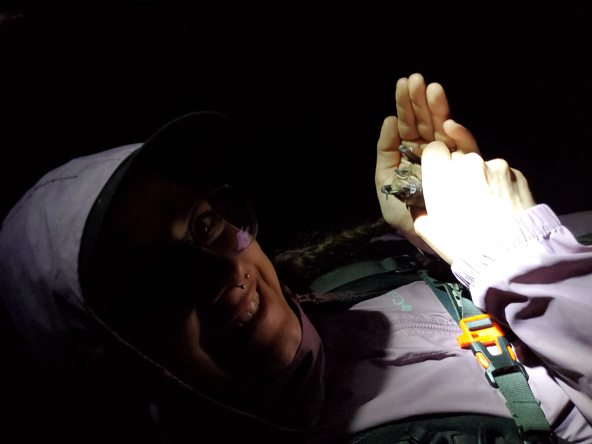
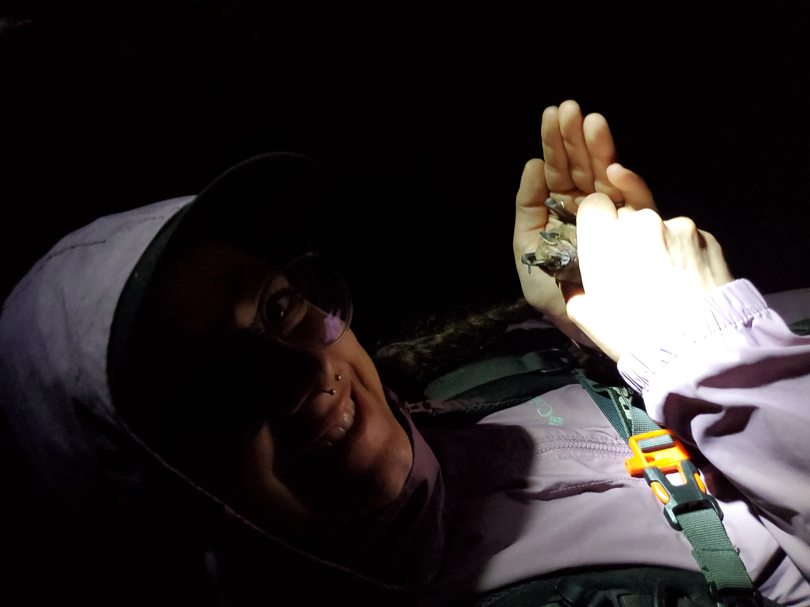
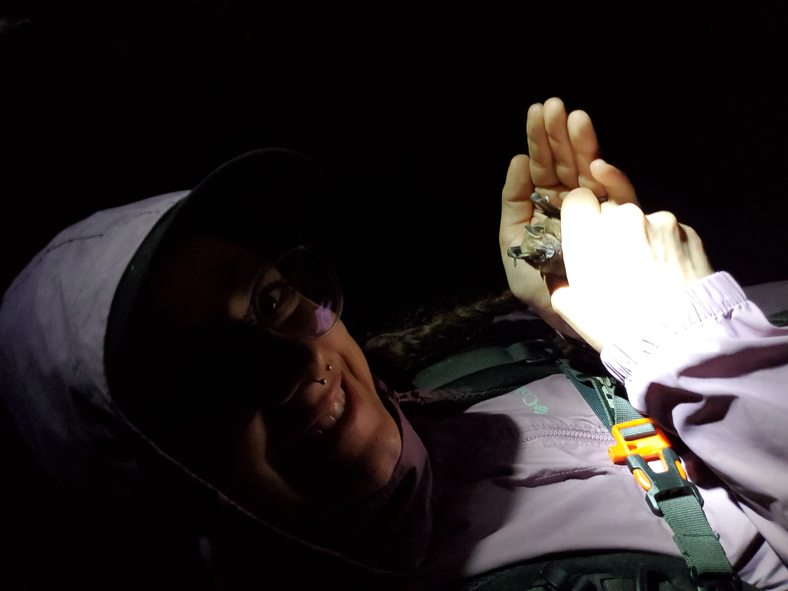

MSU Denver students can discover Study Abroad programs like this and others through the Student Study Abroad Program Options!

MSU Denver students can discover Study Abroad programs like this and others through the Student Study Abroad Program Options!
This is the third web page for the first coding lab for GIS 3410, Web Mapping, from MSU Denver.
I am taking this course as a requirement for my GIS minor and certificate from MSU Denver. I am looking forward to being a strong candidate for a field research position in Wildlife Biology after I graduate in December 2023. Some other GIS classes that I have enjoyed at MSU Denver have been:
On top of my GIS minor/certificate, I am also a biology major. Some biology classes I have taken that make me a good candidate to be a Wildlife Biologist are:
I have also taken a few field experience courses, including:

MSU Denver students can discover Study Abroad programs like this and others through the Student Study Abroad Program Options!
| Class Name | Credit Hours | Reason Taking |
|---|---|---|
| Vascular Plant Taxonomy | 4 | Additional BIO credits to achieve the minimum number of botany credits required to be a federal Wildlife Biologist. |
| Cartography | 3 | Required to finish the GIS minor/certificate. |
| Web Mapping | 3 | Required to finish the GIS minor/certificate. |
| Internship in Biology | 1 | Addional BIO credit to show my position as Teacher's Assistant for Animal Ecology on my transcript. |
| Undergraduate Research in Biology | 1 | Additional BIO credit to show my position as an Undergraduate Research Assistant on my transcript. |